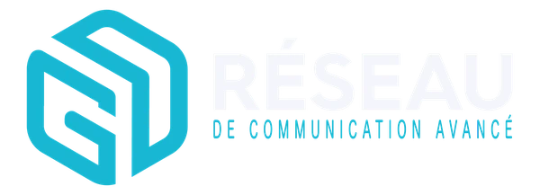
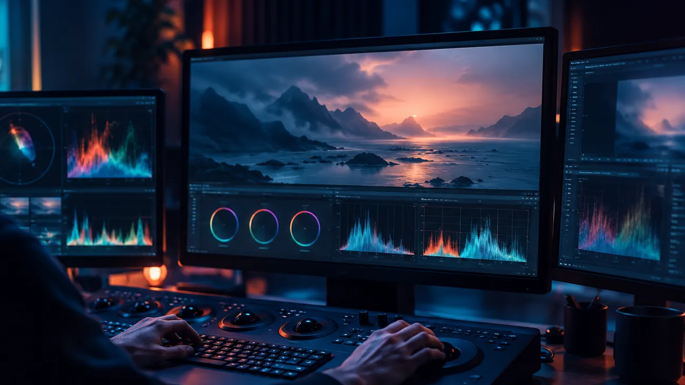
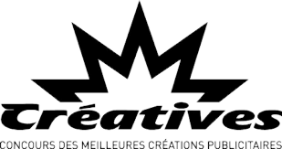

Le contexte
À compléter avec le client : qui est Sémittel, quelle était la situation de départ.

Se rencontrerÉtude de cas, film
Un film pour Sémittel, réalisé en collaboration avec Yello, 3e prix de la catégorie Films aux Creatives 2021.
À compléter avec le client : qui est Sémittel, quelle était la situation de départ.
À compléter : ce que le film devait faire comprendre ou ressentir, et à qui.
À compléter : le parti pris créatif de « Wopé » et son ton.
Un film réunit les métiers de l’écriture, de l’image et de la conduite de projet. Chaque point allumé est un expert du réseau.
Composition illustrative, à confirmer avec GD Réseau pour ce projet.
Démonstration : le film Wopé sera intégré ici dès qu’il sera fourni.
Étapes types d’un film, à adapter au déroulé réel du projet.


3e prix, catégorie Films, 2021Distinction obtenue aux Creatives, concours des meilleures créations publicitaires, pour « Wopé ».
Un film primé, construit avec un partenaire du réseau : c’est la façon de travailler de GD Réseau, des experts réunis pour un projet.
Parler de votre film